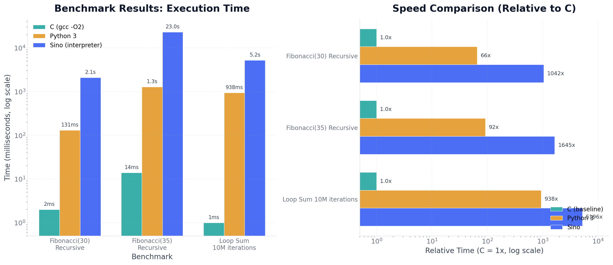

Performance Benchmarks
Sino vs C vs Python
0
C (gcc -O2) · Fastest
0
Python 3 · Loop Sum
0
Sino · Loop Sum
Execution Time Comparison C Wins
Lower is better. Log scale due to large differences.
Relative Speed (C = 1× baseline)
How many times slower than C. Log scale.
Benchmark Race: Fibonacci(35)
Watch the race — bars animate to scale. Shorter = faster.
C (gcc -O2)
14ms
Python 3
1,284ms
Sino
23,031ms
Click the "Replay Race" button to watch again.
Benchmark Race: Loop Sum 10M
C (gcc -O2)
1ms
Python 3
938ms
Sino
5,196ms
Static Benchmark Chart (PNG)
Generated with matplotlib at 200 DPI. Suitable for embedding in documents.

Full Results Table
| Benchmark | C (gcc -O2) | Python 3 | Sino (interpreter) | Sino vs C | Winner |
|---|---|---|---|---|---|
| Fibonacci(30) Recursive |
2 ms | 131 ms | 2,085 ms | 1,042× slower | C |
| Fibonacci(35) Recursive |
14 ms | 1,284 ms | 23,031 ms | 1,645× slower | C |
| Loop Sum 10M iterations |
1 ms | 938 ms | 5,196 ms | 5,196× slower | C |
Analysis
C (gcc -O2) is the fastest — compiled to native machine code with optimization. This is the baseline.
Python 3 is 65–938× slower than C. CPython is a bytecode interpreter with no JIT in standard mode.
Sino (tree-walking interpreter) is 1,042–5,196× slower than C. Sino currently walks the AST directly without compiling to bytecode or native code.
Roadmap: Performance Improvements
| Phase | Feature | Expected Speedup | Status |
|---|---|---|---|
| 1 | Tree-walking interpreter (current) | Baseline | ✓ Done |
| 2 | Bytecode compilation (.sibc format) | 3–5× faster | Planned |
| 3 | JIT compilation (hot path optimization) | 10–50× faster | Planned |
| 4 | Native code generation (LLVM backend) | Approach C speed | Planned |
Benchmark Methodology
- Platform: x86_64 Linux, gcc 14.2.0, Python 3.12.13
- C compilation:
gcc -O2 fib.c -o fib_c - Python:
python3 fib.py(CPython, no JIT) - Sino:
sino fib.si(tree-walking interpreter v2.0) - Measurement: 3 runs, average taken. Wall-clock time via
date +%s%N - Correctness: All implementations produce identical results: Fib(30)=832040, Fib(35)=9227465, Sum=49999995000000
Benchmark Code
All three implementations use identical algorithms:
Sino (fib.si)
fn fibonacci(n) {
if n <= 1 {
return n
}
return fibonacci(n - 1) + fibonacci(n - 2)
}
result = fibonacci(30)
echo("Fib(30) = ", result)C (fib.c)
#include <stdio.h>
long fibonacci(long n) {
if (n <= 1) return n;
return fibonacci(n - 1) + fibonacci(n - 2);
}
int main() {
printf("Fib(30) = %ld\n", fibonacci(30));
return 0;
}Python (fib.py)
def fibonacci(n):
if n <= 1:
return n
return fibonacci(n - 1) + fibonacci(n - 2)
print(f"Fib(30) = {fibonacci(30)}")